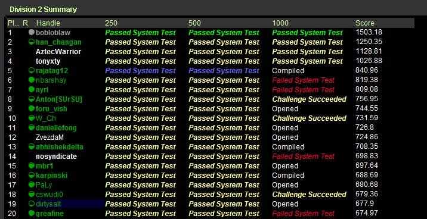

配置TopCoder环境
UPDATE@2017-10-06: 下面这些插件还不支持Python, 所以我开始使用另外一个插件 https://github.com/shivawu/topcoder-greed. 这个插件是一个整合包，配置起来更加方便。
安装topcoder非常简单：
- 确认安装好javaws，因为topcoder客户端是一个java applet
- 下载topcoder的客户端 # wget http://www.topcoder.com/contest/arena/ContestAppletProd.jnlp
- 启动这个applet之后就就可以进入arena了。
为了方便地使用topcoder（比如将一些testcase下载下来的话），可以使用一些插件。个人觉得下面这个组合不错
- code processor
- file edit
- TZTester
这些插件都可以在这里找到 http://community.topcoder.com/tc?module=Static&d1=applet&d2=plugins
三个插件的下载地址分别是：
- http://community.topcoder.com/contest/classes/TZTester/TZTester.jar
- http://community.topcoder.com/contest/classes/CodeProcessor/CodeProcessor.jar
- http://community.topcoder.com/contest/classes/FileEdit/FileEdit.jar
下载完成之后在topcoder客户端里面的options->Editor里面进行配置
- Add增加一个Editor
- EntryPoint填写 codeprocessor.EntryPoint
- ClassPath将前面三个jar选择上
- 然后选择这个为Default Editor
- 然后点击Configure
- EntryPoint填写 fileedit.EntryPoint
- processor class填写 tangentz.TZTester
继续点击Configure选项，在General这个部分基本上没有什么需要修改的。
然后就是配置Code Template。如果使用C++的话，那么可以考虑使用下面的模板
/* coding:utf-8 * Copyright (C) dirlt */ #include <cstdlib> #include <cctype> #include <cstring> #include <cstdio> #include <cmath> #include <ctime> #include <iostream> #include <sstream> #include <vector> #include <string> #include <map> #include <set> #include <algorithm> #include <queue> #include <stack> using namespace std; typedef long long ll; class $CLASSNAME$ { public: $RC$ $METHODNAME$($METHODPARMS$) { } $TESTCODE$ }; // BEGIN CUT HERE int main() { $CLASSNAME$ ___test; ___test.run_test(-1); return 0; } // END CUT HERE
以后每次打开题目都会在本地保存一份代码，并且里面附带测试用例，本地完成之后直接load即可保存到远程。nice!!!
这是我第一次做div2的成绩，留个念
